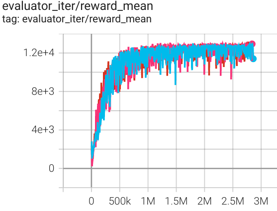
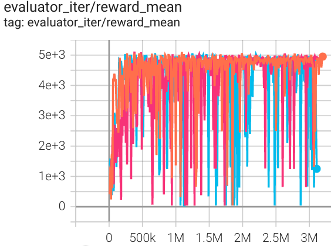
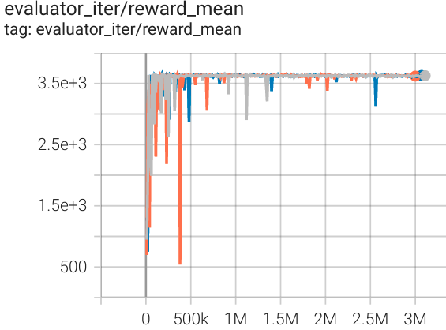

TD3BC¶
Overview¶
TD3BC, proposed in the 2021 paper A Minimalist Approach to Offline Reinforcement Learning, is a simple approach to offline RL where only two changes are made to TD3: a weighted behavior cloning loss is added to the policy update and the states are normalized. Unlike competing methods there are no changes to architecture or underlying hyperparameters. The resulting algorithm is a simple baseline that is easy to implement and tune, while more than halving the overall run time by removing the additional computational overhead of previous methods.
Implementation changes offline RL algorithms make to the underlying base RL algorithm. † corresponds to details that add additional hyperparameter(s), and ‡ corresponds to ones that add a computational cost. Ref¶
Quick Facts¶
TD3BC is an offline RL algorithm.
TD3BC is based on TD3 and behavior cloning.
Key Equations or Key Graphs¶
TD3BC simply consists to add a behavior cloning term to TD3 in order to regularize the policy:
\((\pi(s)-a)^2\) is the behavior cloning term acts as a regularizer and aims to push the policy towards favoring actions contained in the dataset. The hyperparameter \(\lambda\) is used to control the strength of the regularizer.
Assuming an action range of [−1, 1], the BC term is at most 4, however the range of Q will be a function of the scale of the reward. Consequently, the scalar \(\lambda\) can be defined as:
which is simply a normalization term based on the average absolute value of Q over mini-batches. This formulation has also the benefit of normalizing the learning rate across tasks since it is dependent on the scale of Q. The default value for \(\alpha\) is 2.5.
Additionally, all the states in each mini-batch are normalized, such that they have mean 0 and standard deviation 1. This normalization improves the stability of the learned policy.
Implementations¶
The default config is defined as follows:
Model¶
Here we provide examples of td3_bc model as default model for TD3BC.
Benchmark¶
environment |
best mean reward |
evaluation results |
config link |
comparison |
|---|---|---|---|---|
Halfcheetah (Medium Expert) |
13037 |
 | d3rlpy(12124) |
|
Walker2d (Medium Expert) |
5066 |
 | d3rlpy(5108) |
|
Hopper (Medium Expert) |
3653 |
 | d3rlpy(3690) |
environment |
random |
medium replay |
medium expert |
medium |
expert |
|---|---|---|---|---|---|
Halfcheetah |
1592 |
5192 |
13037 |
5257 |
13247 |
Walker2d |
345 |
1724 |
3653 |
3268 |
3664 |
Hopper |
985 |
2317 |
5066 |
3826 |
5232 |
Note: the D4RL environment used in this benchmark can be found here.
References¶
Scott Fujimoto, Shixiang Shane Gu: “A Minimalist Approach to Offline Reinforcement Learning”, 2021; [https://arxiv.org/abs/2106.06860 arXiv:2106.06860].
Scott Fujimoto, Herke van Hoof, David Meger: “Addressing Function Approximation Error in Actor-Critic Methods”, 2018; [http://arxiv.org/abs/1802.09477 arXiv:1802.09477].